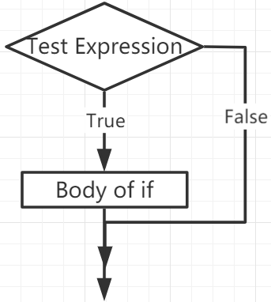

If Else¶
Decision making is required when we want to execute a code only if a certain condition is satisfied.
if¶
if test expression:
statement(s)
Here, the program evaluates the test expression and executes the statement only when the test expression is True.
If test expression is False, then statement(s) will not be executed.
In MicroPython, indentation means the body of the if statement. The body starts with an indentation and ends with the first unindented line.
Python interprets non-zero values as “True”. None and 0 are interpreted as “False”.
if Statement Flowchart
Example
num = 8
if num > 0:
print(num, "is a positive number.")
print("End with this line")
>>> %Run -c $EDITOR_CONTENT
8 is a positive number.
End with this line
if…else¶
if test expression:
Body of if
else:
Body of else
The if..else statement evaluates test expression and will execute the body of if only when the test condition is True.
If the condition is False, the body of else is executed. Indentation is used to separate the blocks.
if…else Statement Flowchart

Example
num = -8
if num > 0:
print(num, "is a positive number.")
else:
print(num, "is a negative number.")
>>> %Run -c $EDITOR_CONTENT
-8 is a negative number.
if…elif…else¶
if test expression:
Body of if
elif test expression:
Body of elif
else:
Body of else
Elif is short for else if. It allows us to check multiple expressions.
If the condition of the if is False, the condition of the next elif block is checked, and so on.
If all conditions are False, the body of else is executed.
Only one of several if…elif…else blocks is executed according to the conditions.
The if block can only have one else block. But it can have multiple elif blocks.
if…elif…else Statement Flowchart

Example
x = 10
y = 9
if x > y:
print("x is greater than y")
elif x == y:
print("x and y are equal")
else:
print("x is greater than y")
>>> %Run -c $EDITOR_CONTENT
x is greater than y
Nested if¶
We can embed an if statement into another if statement, and then call it a nested if statement.
Example
x = 67
if x > 10:
print("Above ten,")
if x > 20:
print("and also above 20!")
else:
print("but not above 20.")
>>> %Run -c $EDITOR_CONTENT
Above ten,
and also above 20!